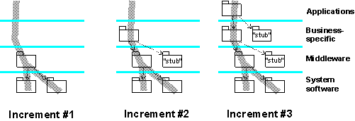

In the relevant workspace, combine all completed updates that are not in the latest baseline. Resolve any
conflicting versions of the artifacts by either removing one of the change sets that created the conflict or by
creating a new change set that includes merged versions of the conflicting artifacts.
When this task begins, implementation subsystems have been delivered to satisfy the requirements of the next (the
'target') build described in the Build Procedures, recalling that plans may define the need for several
builds in an iteration. Depending on the complexity and number of subsystems to be integrated, it is often more
efficient to produce the target build in a number of steps, adding more subsystems with each step, and producing a
series of intermediate 'mini' builds - thus, each build planned for an iteration may, in turn, have its own sequence of
transient intermediate builds. These are subjected to a minimal integration test (usually a subset of the tests
described for this target build) to ensure that what is added is compatible with what already exists in the system
integration workspace. It should be easier to isolate and diagnose problems using this approach.
The integrator accepts delivered subsystems incrementally into the system integration workspace, in the process
resolving any merge conflicts. It is recommended that this be done bottom-up with respect to the layered
structure, making sure that the versions of the subsystems are consistent, taking imports into consideration. The
increment of subsystems is compiled and linked into an intermediate build, which is then provided to the tester to
execute a minimal system integration test.

This diagram shows a build produced in three increments. Some subsystems are only needed as stubs, to make it possible
to compile and link the other subsystems, and provide the essential minimal run-time behavior.
The final increment of a sequence produces the target build. When this has been minimally tested, an initial or
provisional baseline is created for this build. The build is now made available to the tester for complete system
testing.
|